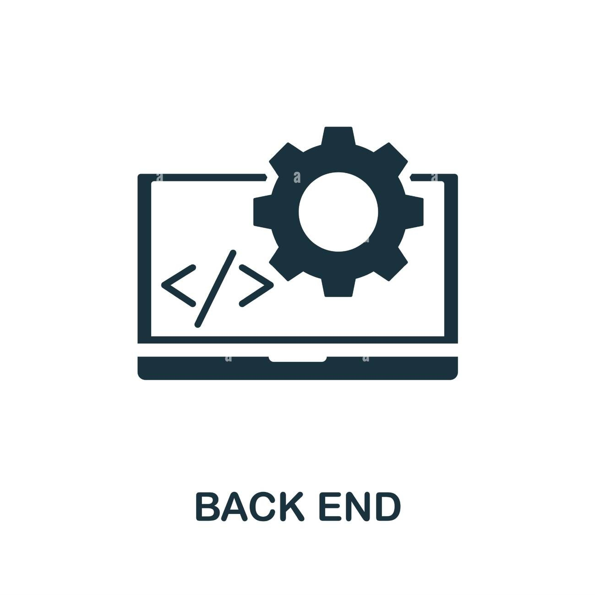
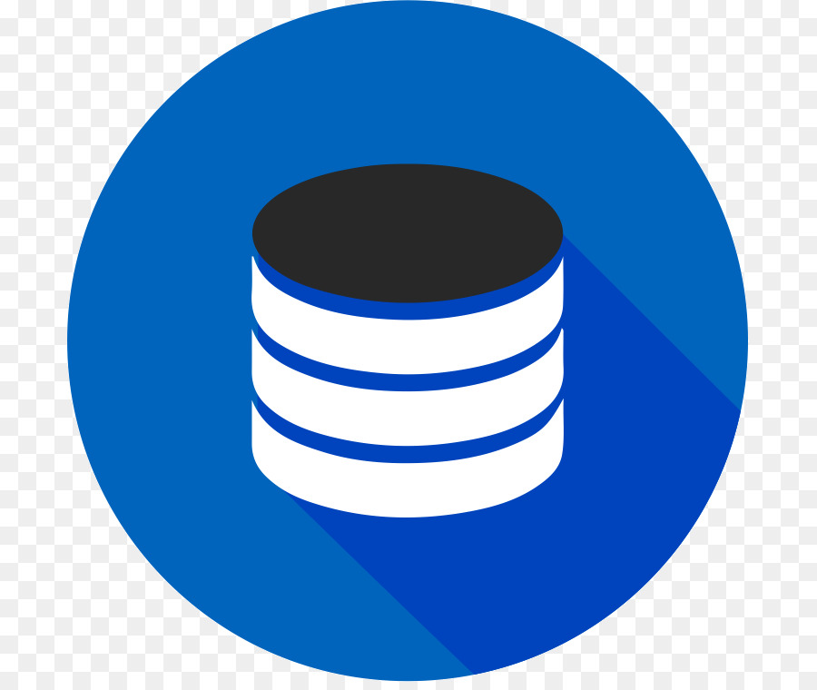

Языки программирования
Backend
Frontend
Database
Mobile
Задания
Добро пожаловать на сайт о языках программирования!
Здесь вы найдете информацию о различных языках программирования.
1. Бекэнд (Backend) языки программирования
Python: Широко используется для создания веб-приложений, анализа данных, машинного обучения и других задач.
Java: Популярен для разработки корпоративных приложений, веб-серверов и мобильных приложений на Android.
PHP: Часто используется для создания динамических веб-сайтов и взаимодействия с базами данных.
Ruby: Используется для разработки веб-приложений с использованием фреймворка Ruby on Rails.
2. Фронтенд (Frontend) языки программирования
HTML/CSS/JavaScript: HTML используется для разметки веб-страниц, CSS для стилизации, а JavaScript для интерактивности и динамического контента.
React: JavaScript библиотека для создания пользовательских интерфейсов.
Angular: Фреймворк на языке JavaScript для разработки одностраничных приложений.
Vue.js: Прогрессивный фреймворк на JavaScript для создания интерфейсов.
3. Базы данных (Database) языки программирования
SQL (Structured Query Language): Язык запросов, используемый для управления данными в реляционных базах данных.
MySQL: Популярная открытая реляционная база данных.
MongoDB: Документоориентированная NoSQL база данных.
PostgreSQL: Мощная объектно-реляционная база данных.
4. Мобильная разработка
Swift: Используется для разработки приложений под iOS.
Kotlin/Java: Для разработки приложений под Android.
React Native: Позволяет создавать кроссплатформенные мобильные приложения на JavaScript.